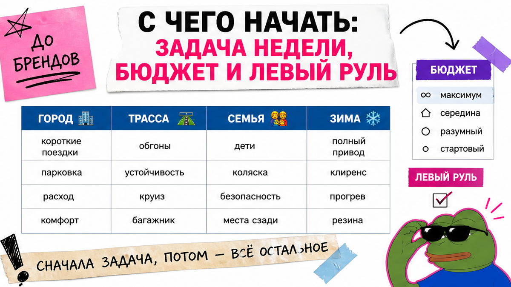
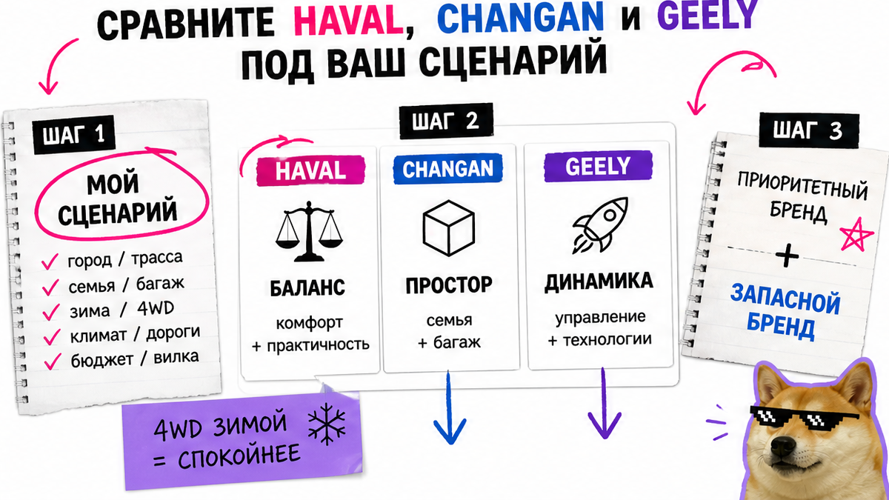
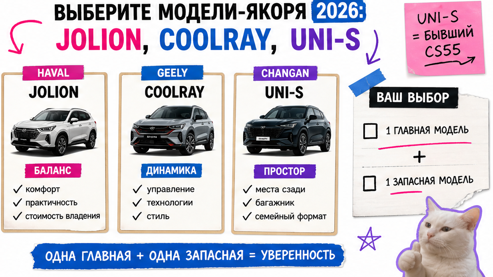

Аня из Хабаровска уже почти перевела депозит за "красивый Changan с панорамой" – в ролике салон выглядел как премиум. Потом выяснилось: удобного сервиса в городе нет, зимой нужен полный привод, а в комплектации его нет, и робот дёргался в пробке. Если выбираете хавал джили или смотрите хавал или чанган "по картинке", остановитесь до перевода денег: сценарий недели → бренд → модель → чеклист из семи пунктов до депозита.
Коротко: Не ищите "лучший китайский кроссовер вообще". Сначала запишите задачу недели (город, трасса, семья, зима), потом сравните Haval, Changan и Geely под этот сценарий. До депозита зафиксируйте привод, коробку, мощность и адрес сервиса в городе. CS55 Plus и UNI-S – одна модель после переименования. Результат сегодня: 1–2 кандидата на бумаге без аванса.
Три бренда часто выглядят одинаково: большой экран, турбо около 1.5 и обещания "как у европейцев". На практике разница в характере, просторе и сервисе. По данным АВТОСТАТ (через Newsinfo) удовлетворённость сервисом в РФ у Changan выше, чем у Geely и Haval (83,9 против 78,8 и 77,3 из 100). "Самый раскрученный" и "самый удобный в обслуживании" для новичка могут не совпадать – поэтому депозит "по ролику" опасен.
Мы в Авто-Сейлс во Владивостоке подбираем кроссоверы из Китая под заказ. Здесь не спорим, какой китаец "лучше навсегда": собираем машину под вашу неделю и не отпускаем к депозиту без письменной комплектации.

Типичная ошибка – открыть три обзора и выбрать "самый красивый салон". Сделайте иначе: на одной странице заметок опишите обычную неделю.
Зафиксируйте бюджет "под ключ" как вилку, без самодельного расчёта пошлин. Точную цифру запросите в каталоге Авто-Сейлс – в статье нет калькулятора цен. Левый руль для РФ – база: не тратьте время на правый "потому что дешевле на картинке".
Сделайте: сценарий + вилка бюджета + пометка "левый руль" до сравнения брендов. Не делайте: депозит из-за панорамы, пока не ясен привод и сервис в городе.

На пальцах три характера массового сегмента. Haval Jolion чаще берут как баланс: семья и сеть HAVAL CITY (поиск дилера на haval.ru). Geely Coolray – про динамику; багажник обычно скромнее. Changan CS55 Plus (UNI-S) хвалят за простор и оснащение; по опросу сервиса бренд часто выше соседей, но у части владельцев нет полного привода – критично для зимы.
| Сценарий | Haval | Changan | Geely |
|---|---|---|---|
| Город и парковка | Удобный старт, массовый Jolion | Простор салона, комфорт | Живой Coolray в потоке |
| Трасса и обгоны | Спокойный баланс | Комфорт, смотрите шумку | Сильная сторона Coolray |
| Семья с детьми | Частый выбор "на каждый день" | Второй ряд и багажник | Coolray теснее; Atlas/Monjaro – другой бюджет |
| Зима / грунтовка | Ищите 4WD в комплектации | Проверьте 4WD письменно – его может не быть | 4WD чаще у Atlas/Monjaro |
Вердикт по сценарию: Город без претензий – начните с Jolion или Coolray. Семья и простор – CS55 Plus / UNI-S. Зима с полным приводом – требуйте 4WD в оффере. "Geely надёжнее Haval навечно" не выбирайте: сравнивайте живой экземпляр и сервис рядом с домом.
Сделайте: строку "мой сценарий → приоритетный бренд → запасной". Не делайте: спор "хавал джили кто круче" без вашей недели за рулём.

Короткий список новичка в 2026. Haval Jolion – якорь сегмента; дилерские витрины дают ориентир "от ~2,1 млн ₽" – уточняйте на дату. Geely Coolray на geely-motors.com в октябре 2026 – ориентир "от ~2,62 млн ₽"; Atlas и Monjaro – если бюджет выше. Changan CS55 Plus официально стал UNI-S: это переименование бестселлера (BlueCore 1.5T, 181 л.с.), не "другая машина". На changanauto.ru спецпредложение "от 2 379 900 ₽" до 31.10.2026 – снова ориентир, не прайс статьи.
Например, Priority Auto сводит характеры так: Jolion – баланс, Coolray – динамика и меньше багажник, CS55 – простор. Рамка удобна, чтобы сузить поиск до 1–2 лотов.
Сделайте: 1 основную и 1 запасную модель. Не делайте: искать "новый CS55 Plus отдельно от UNI-S".
Боль "внесу деньги и приедет не та комплектация" закрывается только письменно. AutoFeel советует до покупки смотреть эргономику меню, поведение коробки, адрес сервиса и исключения гарантии – не только "лошади и экран".
В реальном проекте подбора мы просим этот список до разговора про аванс. Статус поставки уточняйте у подборщика или в каталоге – без пошаговой растаможки здесь.
Сделайте: семь пунктов с галочками. Не делайте: депозит "завтра поднимут цену", пока нет адреса сервиса и строки про привод.
Хочется машину, которой "ещё нет у соседей". Честно говоря, для новичка это плохой приоритет: редкая комплектация часто приходит раньше сервиса и статистики поломок. Смотрите на живой экземпляр и гарантию, а не на шильдик "новый год модели".
Массовые Jolion, Coolray и UNI-S проще обслуживать: больше мастеров и отзывов. Редкую версию отложите, пока не будет СТО бренда и прозрачной истории.
Сделайте: вердикт "массовая модель сейчас / новинка позже". Не делайте: депозит за уникальную комплектацию без сервиса в вашем городе.
Критерий успеха: депозит не внесён, а на бумаге уже есть сценарий, бюджет-вилка, любимый бренд плюс запасной и список для подборщика. Так вы перестаёте выбирать "по панораме".
Workflow до депозита:
Сценарий недели → Вилка бюджета → Бренд по таблице → 1–2 модели → Сервис в городе → Письменная комплектация (4WD/КПП/опции) → Тест или видео DCT → Запрос в каталог / Telegram
Нужен расчёт и подбор под ключ – откройте каталог avto-sales125.ru и уточните вилку. Детали по комплектации – в Telegram avtosales125. Форм на странице нет: бронь и цифры живут в каталоге и переписке.
Итог: сегодня вы можете назвать 1–2 кандидата (Haval / Changan / Geely), знать зачем каждый, и не отдать депозит вслепую. Это результат статьи – спокойный выбор до оплаты, а не "эксперт по Китаю".
Материал проверен: редакция Авто-Сейлс (эксперты по авто под заказ из Японии, Кореи и Китая).
Достоверность: факты сверены с официальными страницами Haval, Geely и Changan, материалами АВТОСТАТ/Newsinfo по сервису, обзорами Priority Auto и AutoFeel, отзывами владельцев (Lenta, Haval Club) на дату 16.10.2026; актуальные расчёты "под ключ" – только в каталоге.
Сначала проверьте полный привод в конкретной комплектации. У CS55 Plus / UNI-S владельцы часто жалуются, что 4WD нет. Сделайте так: зима + грунтовка → только оффер с 4WD и адрес сервиса; иначе берите запасной бренд с подтверждённым полным приводом.
Не выбирайте "надёжность навечно" по ролику. Сравните сервис рядом с домом, гарантию и коробку в пробке. На практике массовый Jolion или Coolray проще редкой новинки.
Да, под заказ это рабочий сценарий Авто-Сейлс. Статус и условия уточните у подборщика в каталоге или Telegram до депозита – без схем "через знакомого".
Нет. По анонсу Changan CS55 Plus перешёл в линейку UNI и стал UNI-S. Ищите одну модель под двумя именами и сверяйте комплектацию.
Попросите видео или тест старта в пробке на малых скоростях. Рывки – частая жалоба на форумах Jolion и в сравнениях Coolray. Не делайте вывод только по пустой трассе.
Начните с CS55 Plus / UNI-S и сравните второй ряд с Jolion. Coolray обычно теснее по багажнику. Зафиксируйте сценарий "семья" и только потом смотрите экраны.